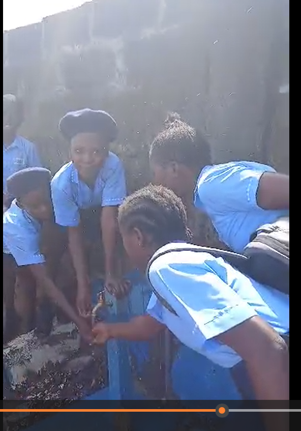

Waterloo, Sierra Leone
Story 01
Water Tap for Apostolic Christian School
At Apostolic Christian School, more than 1,000 students did not have on-site access to drinking water. Students carried water from home or left school grounds to find it, which interrupted learning, safety, and hygiene.
Sitis Christi funded a dedicated school water tap for drinking water and restroom hygiene. The tap supports a safer and more consistent school day for students and staff.
Clean water for ~1,000 students daily
Improved restroom hygiene and sanitation
Reduced need for students to leave school grounds
More consistent learning environment